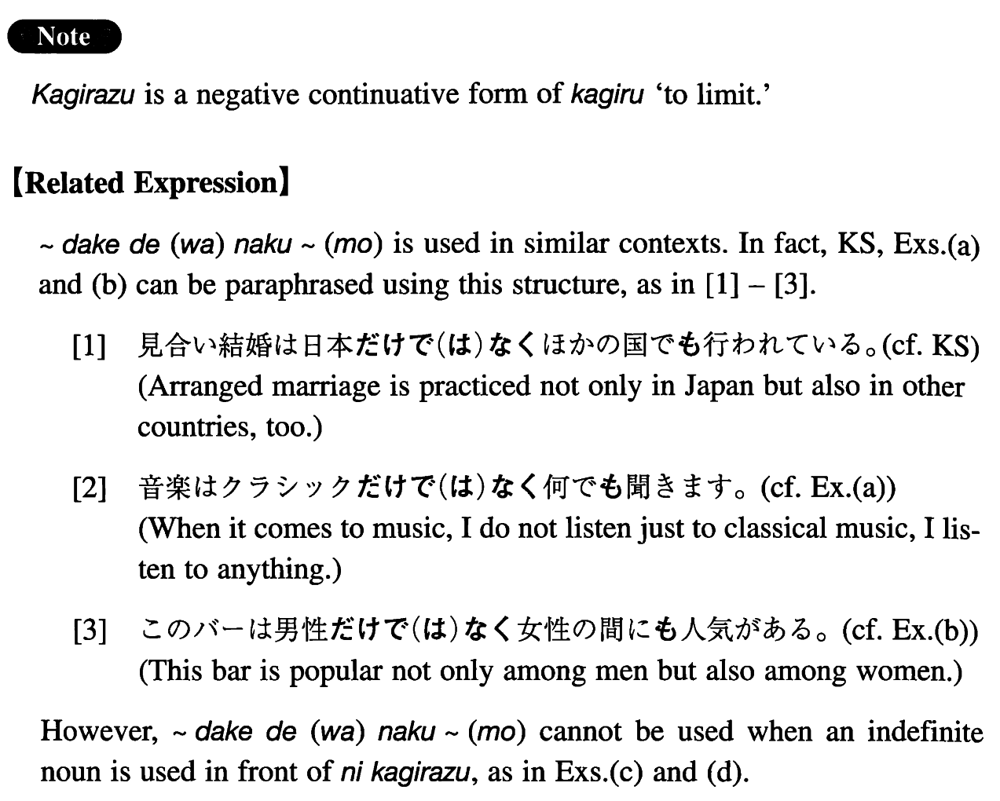

に限らず (I. 249)
- (ks).
- 見合い結婚は日本に限らずほかの国でも行われている。
- Arranged marriage is not limited to Japan; it is practiced in other countries, too.
- (a).
- 音楽はクラシックに限らず何でも聞きます。
- Talking about music, I listen to any music, not just classical music.
- (b).
- このバーは男性だけに限らず女性の間にも人気がある。
- This bar is popular not only among men but also among women.
- (c).
- 果物は何に限らず好きです。
- My preference for fruit is unlimited (literally: not limited to something); I like any kind.
- (d).
- 何事に限らず仕事は誠意をもって行うことが大切だ。
- Whatever you do (literally: Not limited to anything), it is important to do it with sincerity.
